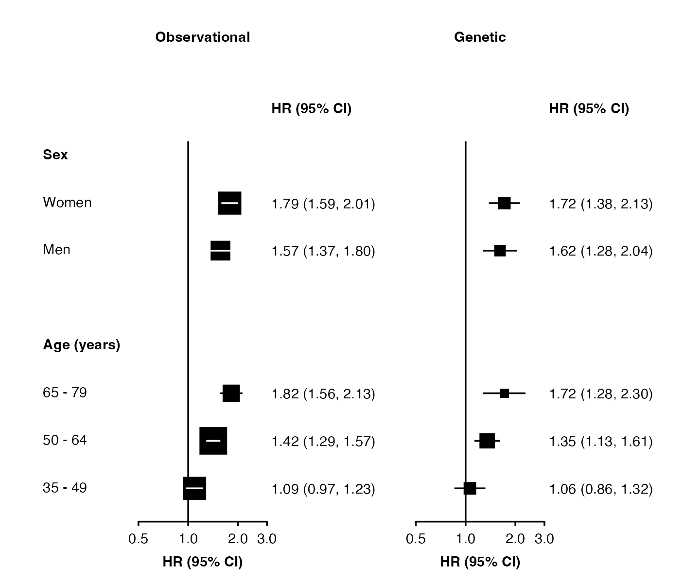
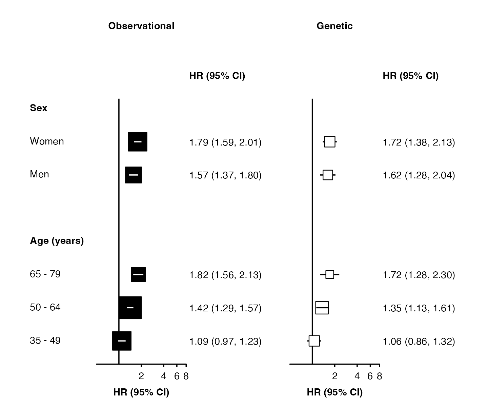

Introduction
The forest_plot() function creates a forest plot using
the ggplot2 graphics
package. The function returns both a plot and the ggplot2 code used to
create the plot. In RStudio, the code used to create the plot will be
shown in the Viewer pane (see [Plot code example] for an example).
Basic usage
Supply a data frame of estimates (by default, assumed to be log
hazard ratios) and standard errors to the forest_plot()
function:
my_results <- data.frame(
subgroup = c("men", "women", "35_49", "50_64", "65_79"),
est = c( 0.45, 0.58, 0.09, 0.35, 0.6),
se = c( 0.07, 0.06, 0.06, 0.05, 0.08)
)
forest_plot(my_results)
Use col.est and col.stderr to set the columns
that contain estimates and standard errors. By default, the function
will look for columns with names estimate/est/beta/loghr and
stderr/std.err/se. If you want to supply confidence interval limits, set
col.lci and col.uci.
If your estimates are not on the log scale, then set
exponentiate=FALSE.
Row labels
Set col.key to identify the rows of the forest plot.
forest_plot(my_results, col.key = "subgroup")
my_row_labels <- data.frame(
subgroup = c("men", "women", "35_49", "50_64", "65_79"),
label = c("Men", "Women", "35 - 49", "50 - 64", "65 - 79")
)
forest_plot(my_results,
col.key = "subgroup",
row.labels = my_row_labels)To quickly add subheadings, include labels with a missing col.key:
row_labels <- data.frame(
subgroup = c(NA, "men", "women",
NA, "35_49", "50_64", "65_79"),
label = c("Sex", "Men", "Women",
"Age (years)", "35 - 49", "50 - 64", "65 - 79")
)
forest_plot(my_results,
col.key = "subgroup",
row.labels = row_labels)To automatically create groupings and add subheadings, use multiple
columns in the row.labels data frame.
row_labels <- data.frame(
subgroup = c("men", "women",
"35_49", "50_64", "65_79"),
group = c("Sex", "Sex",
"Age (years)", "Age (years)", "Age (years)"),
label = c("Men", "Women",
"35 - 49", "50 - 64", "65 - 79")
)
forest_plot(my_results,
col.key = "subgroup",
row.labels = row_labels)Use the row.labels.levels argument to choose columns for
row labels and the hierarchy for grouping. (Otherwise, all character
columns in the row labels data frame will be used.)
forest_plot(my_results,
col.key = "subgroup",
row.labels = row_labels,
row.labels.levels = c("label"))The order of rows is set by the row.labels data
frame.
row_labels <- data.frame(
subgroup = c("women", "men",
"65_79", "50_64", "35_49"),
group = c("Sex", "Sex",
"Age (years)", "Age (years)", "Age (years)"),
label = c("Women", "Men",
"65 - 79", "50 - 64", "35 - 49")
)
forest_plot(my_results,
col.key = "subgroup",
row.labels = row_labels)Add a heading above the row labels with
row.labels.heading:
forest_plot(my_results,
col.key = "subgroup",
row.labels = row_labels,
row.labels.heading = "Subgroup")Multiple panels
my_resultsA <- my_results
my_resultsB <- data.frame(
subgroup = c("men", "women", "35_49", "50_64", "65_79"),
est = c(0.48, 0.54, 0.06, 0.3, 0.54),
se = c(0.12, 0.11, 0.11, 0.09, 0.15)
)
forest_plot(list("Observational" = my_resultsA,
"Genetic" = my_resultsB),
col.key = "subgroup",
row.labels = row_labels)You can use split() to create a list of data frames from
a single data frame:
my_resultsAB <- data.frame(
analysis = factor(c(rep("Observational", 5), rep("Genetic", 5)),
levels = c("Observational", "Genetic")),
subgroup = c("men", "women", "35_49", "50_64", "65_79",
"men", "women", "35_49", "50_64", "65_79"),
est = c( 0.45, 0.58, 0.09, 0.35, 0.6,
0.48, 0.54, 0.06, 0.3, 0.54),
se = c(0.07, 0.06, 0.06, 0.05, 0.08,
0.12, 0.11, 0.11, 0.09, 0.15)
)
forest_plot(split(my_resultsAB, ~ analysis),
col.key = "subgroup",
row.labels = row_labels)Adding columns of text
Use col.left and col.right to add columns
of text either side of each panel. Use col.left.heading and
col.right.heading to customise the column headings.
my_results$n <- c(834, 923, 587, 694, 476)
forest_plot(my_results,
col.key = "subgroup",
row.labels = row_labels,
col.left = "n",
col.left.heading = "No. of events")
Use col.left.hjust and col.right.hjust to set
the horizontal justification of the columns (0 = left, 0.5 = center, 1 =
right).
Scaling point size
Set scalepoints = TRUE to have point size (area)
proportional to the inverse of the variance (SE2) of the
estimate.
forest_plot(my_results,
col.key = "subgroup",
row.labels = row_labels,
scalepoints = TRUE)Confidence interval lines
Narrow confidence interval lines can be hidden by points. Set the
panel.width argument to change the appearance of narrow
confidence interval lines. The function will by default try to change
the colour and plotting order of confidence intervals so that they are
not hidden. You can also supply vectors and lists to the
cicolour argument to have more control.
Note that the calculations for identifying narrow confidence intervals has has been designed to work well for shapes 15 (the default) and 22, and for symmetric confidence intervals. These may not be completely accurate in all scenarios, so check your final output carefully.
forest_plot(split(my_resultsAB, ~ analysis),
col.key = "subgroup",
row.labels = row_labels,
scalepoints = TRUE,
pointsize = 8,
xlim = c(0.5, 3),
xticks = c(0.5, 1, 2, 3),
panel.width = unit(28, "mm"))
forest_plot(split(my_resultsAB, ~ analysis),
col.key = "subgroup",
row.labels = row_labels,
scalepoints = TRUE,
pointsize = 10,
xlim = c(0.5, 8),
shape = "square filled",
stroke = 0.5,
fill = list("black", "white"),
panel.width = unit(28, "mm"))
Different limits on panels
forest_plot() uses ggplot facets to place forest plots
side-by-side. Facets cannot easily have different scales applied, but
you can use forest_plot() for each panel then arrange them
side-by-side.
If xlim, xticks and panels are
lists of the same length, then forest_plot() will do this
automatically. The function will return a list containing “figure” (a
graphic object of the whole figure) and “plots” (a list of ggplots, one
for each panel).
forest <- forest_plot(split(my_resultsAB, ~ analysis),
col.key = "subgroup",
row.labels = row_labels,
xlim = list(c(0.5, 3 + 1e-10),
c(0.1, 4)),
xticks = list(c(0.5, 1, 2, 3),
c(0.1, 1, 2, 4)),
xlab = c("Hazard Ratio (95% CI)", "Odds Ratio (95% CI)"),
col.right.heading = list("HR (95% CI)", "OR (95% CI)"))
grid::grid.newpage()
grid::grid.draw(forest$figure)Use grid::grid.draw() to draw the figure (use
grid::grid.newpage() to clear), and ggsave()
or save_figure() to save to a file.
Warnings: If scalepoints = TRUE (and minse
is not specified the same for each plot) then this scaling will be on a
panel-by-panel basis so box sizes are not comparable between panels.
Adding heterogeneity and trend test results
The addtext argument can be used to add results of
heterogeneity or trend tests, or some other text, in the text column of
estimates and CIs. It needs to be a list of data frames, the same length
as panels. Data frames should contain a column with the name specified
in col.key, and one or more of:
- a column named ‘text’ containing character strings
- a column named ‘expr’ containing character strings that will be parsed into expressions and displayed as described in ?plotmath
- columns named ‘het_dof’, ‘het_stat’, and ‘het_p’ containing character strings
- columns names ‘trend_stat’ and ‘trend_p’ containing character strings
het_trend_results <- data.frame(
analysis = factor(c("Observational", "Observational", "Observational", "Genetic", "Genetic", "Genetic"),
levels = c("Observational", "Genetic")),
subgroup = c( "men", "35_49", "35_49", "men", "35_49", "35_49"),
het_dof = c( "1", NA, NA, "1", NA, NA),
het_stat = c( "1.99", NA, NA, "0.136", NA, NA),
het_p = c("=0.16", NA, NA, "=0.71", NA, NA),
trend_stat = c( NA, "27.2", NA, NA, "6.98", NA),
trend_p = c( NA, "<0.001", NA, NA, "=0.008", NA),
text = c( NA, NA, NA, NA, NA, "Note"),
expr = c(NA, NA, "frac(-b %+-% sqrt(b^2 - 4*a*c), 2*a)", NA, NA, NA)
)
forest_plot(split(my_resultsAB, ~ analysis),
col.key = "subgroup",
row.labels = row_labels,
scalepoints = TRUE,
pointsize = 8,
xlim = c(0.5, 3),
xticks = c(0.5, 1, 2, 3),
panel.width = unit(28, "mm"),
right.space = unit(45, "mm"),
addtext = split(het_trend_results, ~ analysis))Note that values should all be character strings, and P-values should include the necessary “=” or “<”.
The automatic positioning of columns and spacing of panels does not
take into account this additional text, so you may need to use the
right.space and col.right.pos arguments for a
satisfactory layout.
Customisation
See Customising plots for more ways to customise forest plots.
Notes
Spacing
The function attempts to set the positions of columns of text and
spacing automatically. Where this does not produce a satisfactory
layout, you can use the arguments col.left.pos,
col.right.pos, left.space,
right.space, and mid.space to control
positions and spacing manually.
The plot will fill the vertical space available. Use
plot.margin to change the top and bottom margins as
needed.
Confidence intervals
When standard errors are supplied to the shape_plot()
and forest_plot() functions, confidence intervals are
calculated as 95% confidence intervals using the Normal approximation
method (with critical value 1.96).
Stroke
The stroke argument sets the stroke aesthetic for
plotted shapes. See https://ggplot2.tidyverse.org/articles/ggplot2-specs.html
for more details. The stroke size adds to the total size of a shape, so
unless stroke = 0 the scaling of size by inverse variance
will be very slightly inaccurate (but there are probably more important
things to worry about).